Look n°26
Petit espace noir et rose, miroir nuage lumineux
Un petit coin noir et rose qui brille le soir : meuble cannelé à pieds dorés, miroir nuage auréolé de LED et lampadaire en cristal rose. Voici les articles pour recréer ce look chez toi.
-
Meuble TV noir cannelé à pieds dorés, 140 cm
Deux portes cannelées noires, niche ouverte au centre, poignées et pieds dorés. 140 × 38 × 45,9 cm.
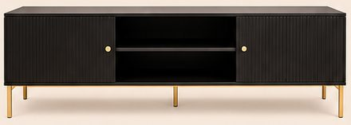
-
Miroir nuage noir 70 × 100 cm
Cadre fin en aluminium noir, verre trempé. 70 cm de large, 100 cm de haut. Le halo vient du ruban LED (n° 8) collé derrière.
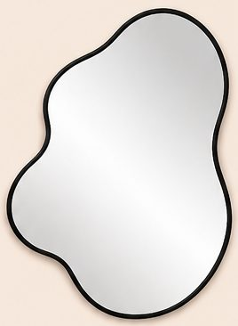
-
Lampadaire à 3 abat-jour en cristal rose
Tige chromée, 3 abat-jour en cristal rose, interrupteur rotatif. 177,8 cm de haut.
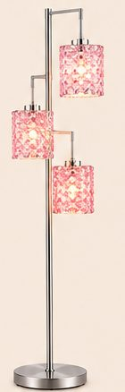
-
Cerisier artificiel rose clair 120 cm
Fleurs en tissu, branches orientables, pot lesté. 120 cm de haut.
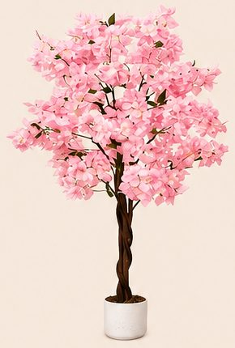
-
Tapis en fausse fourrure rose 160 × 230 cm
Poil ras très doux, dessous antidérapant.
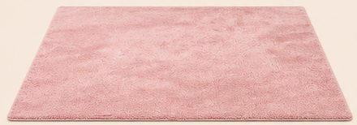
-
Étagères murales en losange noires (lot de 2)
Losange de 27 cm de côté traversé par une tablette de 38 cm.
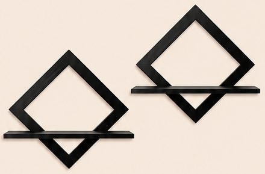
-
3 affiches roses (« you are so loved », nœud, cœur) et 3 cadres noirs 30 × 40
Les affiches sur toile sont vendues sans cadre : le lot de 3 cadres noirs avec passe-partout est le 2e lien.
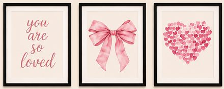
-
Ruban LED COB blanc chaud 5 m
Ligne de lumière continue sans points, 3000 K, variateur et télécommande. Ici derrière le miroir et sous le meuble.
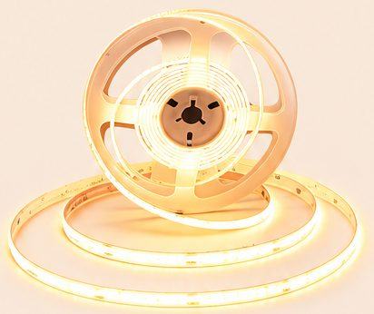
-
Vase noir et doré ondulé et pivoines rose clair
Vase en céramique de 24 cm aux vagues soulignées d'or. Lot de 4 bouquets de pivoines de 32 cm.
-
Bonsaï artificiel rose 30 cm
Feuillage rose framboise, pot rectangulaire noir avec galets. 30 cm de haut.
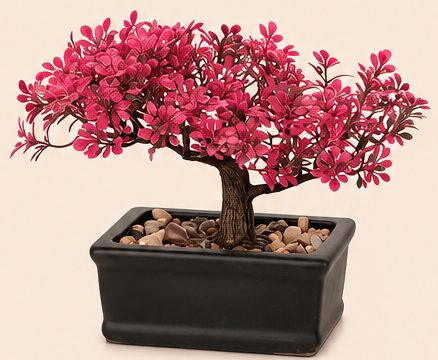
-
Mini succulentes roses (lot de 4)
Petites plantes artificielles dans des pots blancs à facettes.
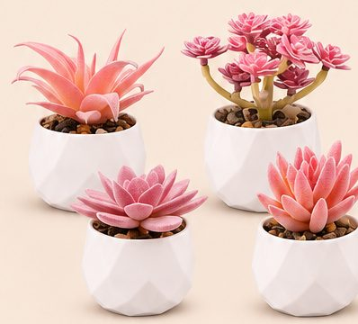
-
Bougies LED roses en vraie cire (lot de 3)
Flamme qui bouge, télécommande et minuterie. 4 bougies sur l'image : le lot en contient 3.
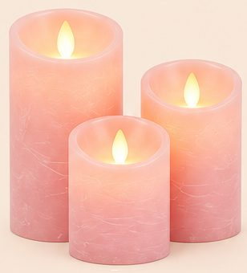
-
Faux livres décoratifs roses (lot de 3)
Boîtes en forme de livres : Milan, Paris et Coco Perfume.
-
Gnomes de Noël roses (lot de 3)
Gnomes en peluche aux bonnets tricotés, dont un sur son petit traîneau.
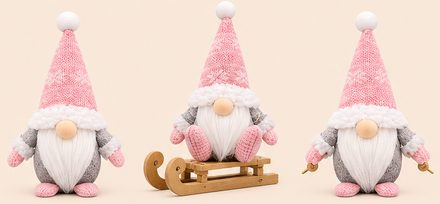
Enregistrer ce look sur Pinterest
Comment naît un lookComment chaque article est choisi, mesuré et vérifiéImage d'inspiration générée par IA. Le prix et la disponibilité de chaque article sont à voir sur Amazon. Liens affiliés : je touche une petite commission si tu achètes, sans surcoût pour toi.